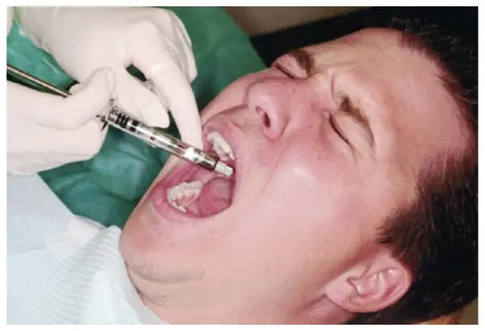
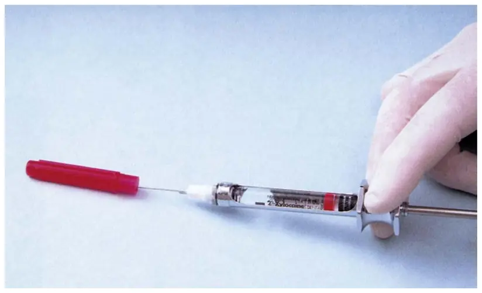

نسخه استخراجشده؛ ترجمه یا تأیید علمی انجام نشده است. وضعیت: captured
دانشجویی هنگام برداشتن سرنگ به بیمار میگوید: «نترس، اصلاً درد نداره، فقط یه آمپول کوچیکه.» بیمار دستهی صندلی را چنگ میزند و چشمش را میبندد. چه چیزی را باید جور دیگری میگفت؟

هنگام ورود سوزن و تزریق، چشمت به صورت بیمار هم باشد. چین افتادن روی پیشانی یا ابرو و پلک زدن نشانهی ناراحتی است. بیشتر وقتها هیچ تغییری نمیبینی، یعنی ورود سوزن بیدرد بوده است.
نمونهی یادداشت: IANB راست، سوزن بلند گیج ۲۵، لیدوکائین ۲٪ با اپینفرین ۱:۱۰۰٬۰۰۰، ۳۶ میلیگرم؛ بیمار بهخوبی تحمل کرد.

اشتباه رایج: گذاشتن بیحسی و رفتن سراغ بیمار دیگر. بیش از نیمی از اورژانسهای مطب حین تزریق یا در ۵ دقیقهی پس از آن رخ میدهد؛ بیمار تازه بیحسشده را تنها نگذار.